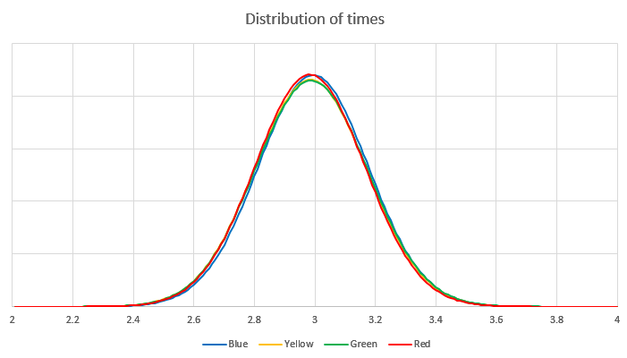
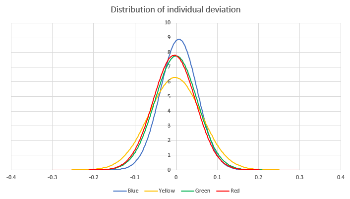
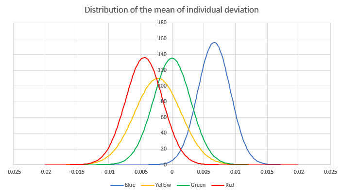
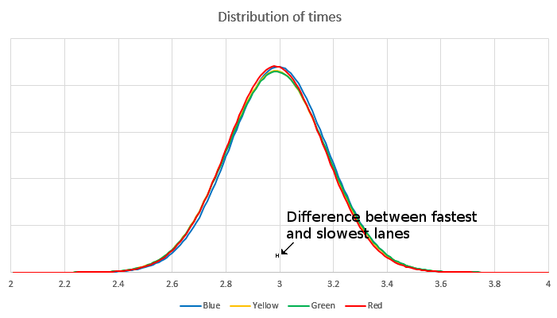

Statistics
UPDATE September 14, 2019
After repeating the analysis for over 1500 cars and 6700 individual race results, the red and green lanes are about 8 ms faster than the blue and yellow lanes:

Below is the original analysis:
Sometimes people ask if one lane is faster than another. After analyzing the data from 304 pinewood derby cars, I can now confidently say "Yes!" Below is a graph of the distribution of race times, separated by lane. In reality the distribution is severely skewed to the right but that kind of statistical analysis is beyond my pay grade.

At first glance, it looks like there is no advantage between one lane and another. Sure enough, a two-sample T-test does not conclusively show any difference between say, the Yellow lane and the Green lane. BUT, this conclusion is wrong because the samples are not independent. To test for differences between the lanes, we subtract from each result the car's average time across all four lanes. We'll call this new number the individual deviation, and plot its distribution:

Visually speaking, the fact that the distribution of individual deviation is much tighter than the distribution of times shows that the majority of the variation in results observed during a race is due to the car, and not the track. Once the differences between the cars is removed (by subtracting the average result for each car), the differences between the lanes begin to stand out. We might have something here.

Plotting the distribution of the mean of individual deviation shows a marked difference between the lanes, with the red lane performing 4 ms faster on average, and the blue lane about 7 ms slower. (The "distribution of the mean" is sort of like where the actual mean probably is, somewhere under that curvy line.) A two-sample T-test between the red lane and the blue lane confirms this result. What does this mean for our racers? Not much, actually. Each car races once on each lane, so any biases caused by fast or slow lanes are negated. And even if it weren't the case, the difference between the fastest and slowest lanes--11 ms--is far less than the typical variation between cars. Let's look at the first plot again--distribution of times, and visualize how big 11 ms is:

11 ms is about the width of the small letter H. It's still much smaller even than the variation in the same car, meaning there are far more significant variables affecting the performance of a car than which lane it is in.